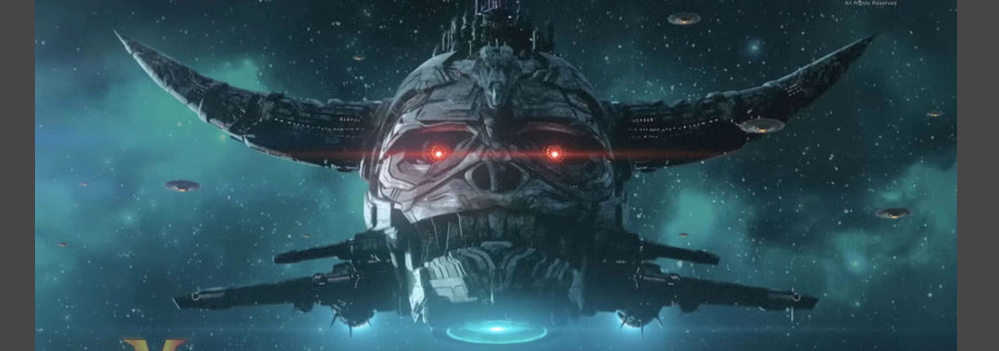
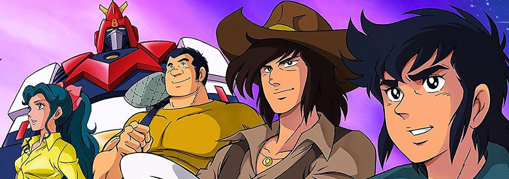
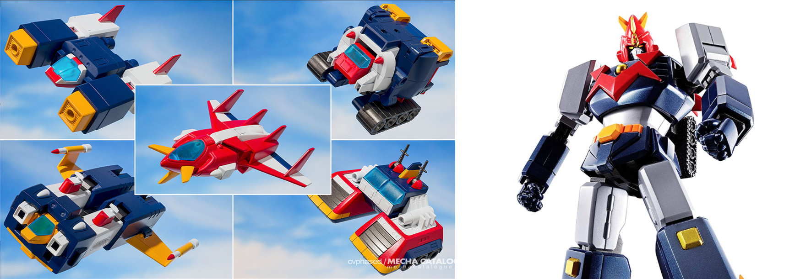
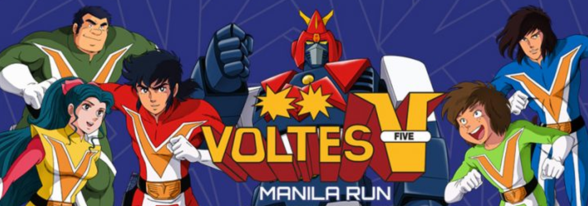

Super Electromagnetic Machine Voltes V
CHŌDENJI MASHĪN BORUTESU FAIBU VOLTES5
From out of nowhere, a mysterious alien race known as the Boazan Forces has invaded the Earth. A group of individuals specially trained to handle this kind of situation has been unleashed. Kenichi, Ippei, Daijiro, Hiyoshi & Megumi are the pilots of the Chō Denji Machine Voltes V(5), Earth's defense against the Boazan and their terrible Beast Warriors.
The plot thickens as the Go Brothers discover their true heritage and the truth behind their father's disappearance. Conflicts and mixed emotions hinder the Go Brothers at times but due to their unwaivering desire to find their dad, they must go to the place where it all started. With the help of the rebels based on Earth and on the aliens' homeworld, the Voltes Team has another mission: remove the tyrant Zu Zanbajil and liberate the people of Boazan..
-
Voltes V: The Liberation

- The Boazanian Empire 
- Voltes Team 
- Volt In 
- Super Electromagnetic Machine Voltes V 